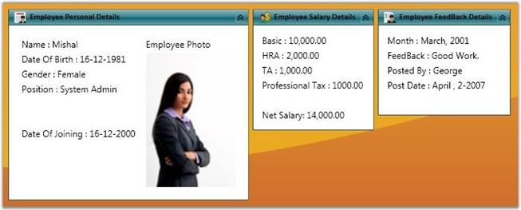

TaskBar control has the capability to provide a UI that is similar to the Windows Explorer TaskBar. It provides a consistent UI for placing commonly used functionalities as grouped items. You can place any Container Panel control inside the TaskBar. For example, when the customized Grid Panel with other controls are placed inside the TaskBar Item, it will be automatically arranged inside the TaskBar Items collection. TaskBar supports the Office2007Black, Office2007Blue, Office2007Silver, Office2003 and Blend themes.

Figure 1039:TaskBar Control